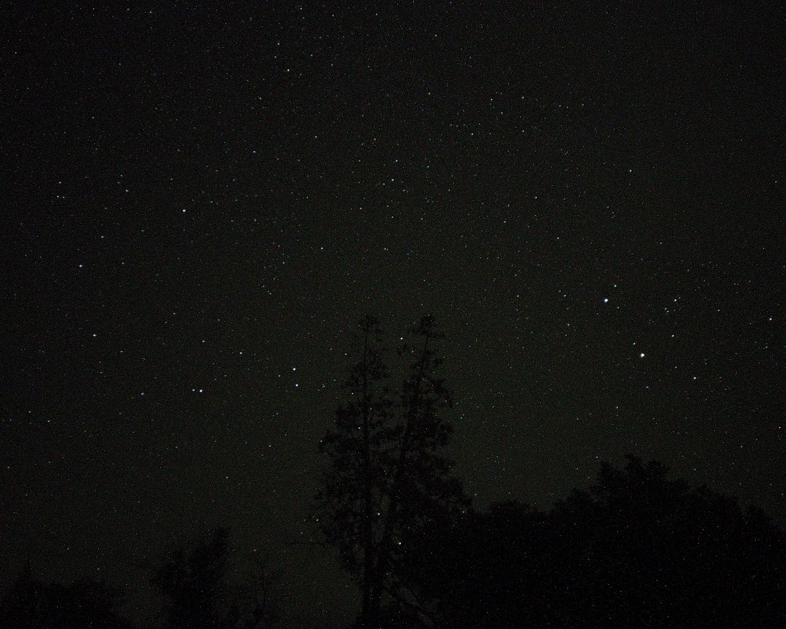
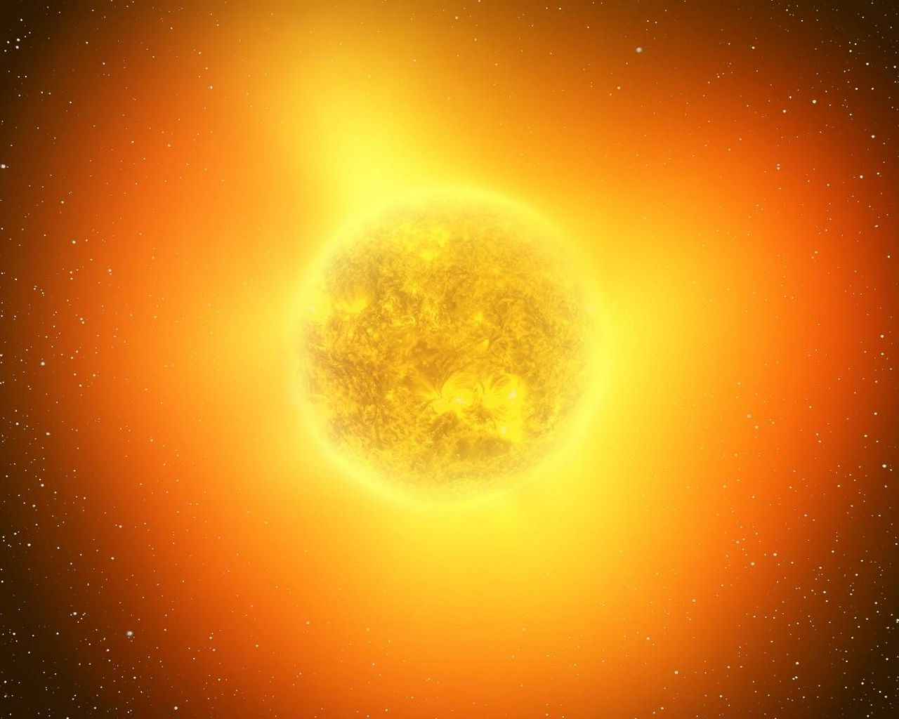
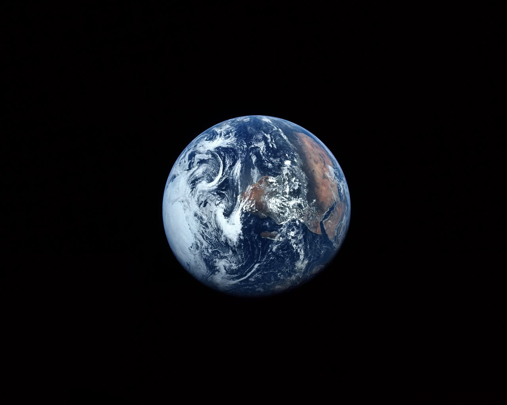

The Milky Way, our home galaxy, is a vast spiral system containing billions of stars, planets, and celestial objects. Spanning approximately 100,000 light-years in diameter, it showcases a majestic band of stars across the night sky. Within its spiral arms, nebulae, and stellar clusters, diverse astronomical phenomena unfold. Earth resides in one of the spiral arms, known as the Orion Arm. The galactic center harbors a supermassive black hole called Sagittarius A*, exerting gravitational influence. The Milky Way's cosmic tapestry captivates astronomers, offering insights into galactic evolution and the universe's intricate web. Observing its beauty fosters a deeper appreciation for the cosmic ballet in which our solar system participates.
In the vastness of the cosmos, our Solar System spins tales of celestial wonder. At its heart, the radiant Sun orchestrates a cosmic ballet. The planets, like characters on a grand stage, each have a unique role. Mercury, the swift messenger, races closest to the Sun. Venus, cloaked in clouds, hides mysteries beneath. Earth, a vibrant blue orb, teems with life. Mars, the red wanderer, whispers of ancient rivers. Jupiter, the giant guardian, commands a retinue of moons. Saturn, adorned with majestic rings, dazzles with cosmic jewelry. Uranus and Neptune, the ice giants, dance in the distant realms. Together, they compose a stellar symphony, captivating stargazers across the universe.
In the vast cosmic expanse, a jewel named Earth emerges, a beacon of life and beauty. A symphony of landscapes unfolds beneath the heavens. Oceans, vast and deep, cradle secrets of ancient tales. Continents, painted with diversity, host the dance of ecosystems. Mountains stand as sentinels of time, whispering stories etched in rock. Rivers weave narratives through valleys, sustaining the tapestry of existence. The atmosphere, a delicate cloak, shelters life beneath its azure embrace. Seasons change, birthing renewal, as flora and fauna harmonize in the grand theatre of existence. Amidst the celestial ballet, Earth stands as a sanctuary of wonders, a testament to the magic of the cosmos.
